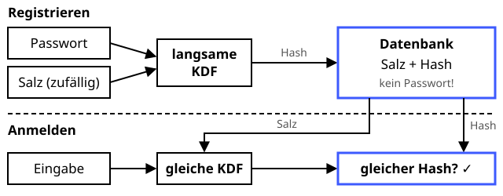

Passwort-Hashing
Langsam gegart schmeckt es Angreifern am wenigsten.
Definition
Ein Server sollte Passwörter nie im Klartext speichern, sondern nur einen gesalzenen, absichtlich langsamen Hash. Beim Login wird das eingegebene Passwort auf dieselbe Weise gehasht und verglichen. So kann der Nutzer beweisen, wer er ist (Authentisierung), und ein Datenleck verrät die Passwörter nicht sofort.
Zutaten
- Das Passwort des Nutzers
- Ein zufälliges Salz (mindestens 16 Byte) pro Nutzer
- Eine langsame Funktion: Argon2id, scrypt, bcrypt oder PBKDF2
- Ein Arbeitsfaktor (Iterationen bzw. Speicherbedarf)
Zubereitung
- Bei der Registrierung ein zufälliges Salz erzeugen.
hash = KDF(Passwort, Salz, Arbeitsfaktor)berechnen.- Salz, Arbeitsfaktor und Hash in der Datenbank speichern – niemals das Passwort.
- Bei der Anmeldung Salz und Arbeitsfaktor aus der Datenbank holen und das eingegebene Passwort genauso hashen.
- Sind beide Hashes gleich, ist der Nutzer angemeldet.
Skizze

In der Datenbank stehen nur Salz und Hash (blau). Beim Anmelden wird die Eingabe mit demselben Salz gehasht und verglichen.
Skizze erstellt von Claude (KI)
Demo
Platzhalter für die Demo
Tipps
- Kein schnelles SHA-256 nehmen: Grafikkarten schaffen Milliarden SHA-256-Hashes pro Sekunde.
- Das Salz verhindert vorberechnete Tabellen (Rainbow Tables) und dass gleiche Passwörter gleiche Hashes haben.
- Empfehlung von OWASP: Argon2id – oder PBKDF2-SHA256 mit mindestens 600.000 Iterationen.
- Fehlversuche begrenzen und zusätzlich einen zweiten Faktor anbieten.